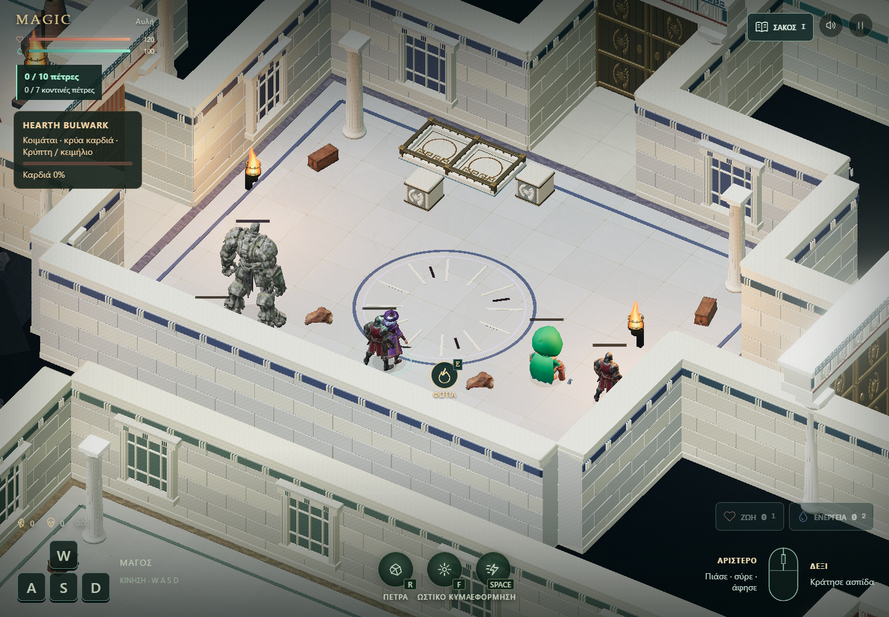
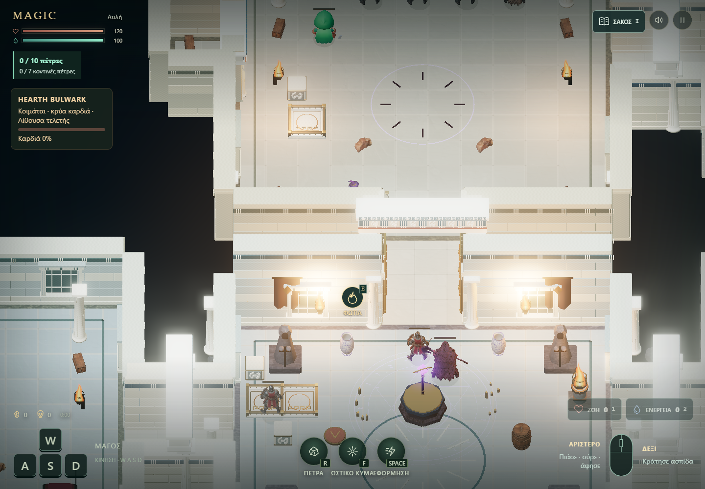
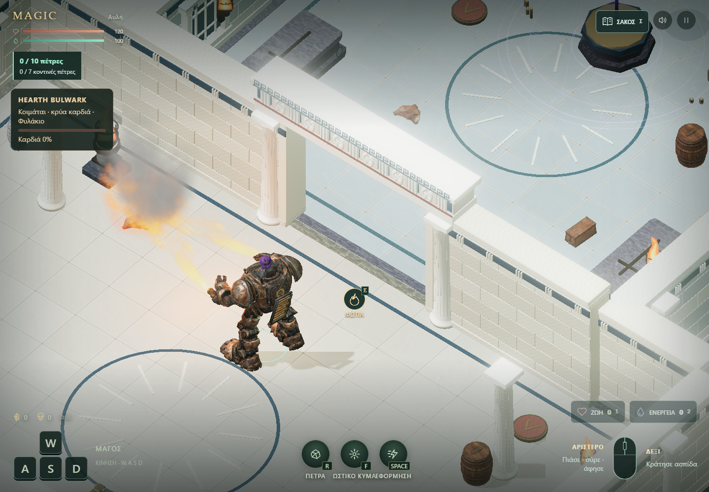

MAGIC / ΕΛΛΗΝΙΚΟ ΠΕΡΙΒΑΛΛΟΝ / 14.10.2026Ένα κάστρο.
Διαφορετικές λύσεις σε κάθε πέρασμα.
Δωρικές κολόνες, οριζόντια επιστύλια, πέτρινα ανάγλυφα και χάλκινες πύλες σε όλα τα 14 δωμάτια. Οι πόρτες συναντούν τους συνεχείς τοίχους χωρίς πλαϊνό πέρασμα. Κάθε χώρος έχει τη δική του απόχρωση πέτρας και ένθετα σχέδια.
Τα σημαντικά δωμάτια και το τυχαίο δωμάτιο του HEARTH έχουν κλειστές πύλες. Συνδυάζονται ενιαίες διπλές βάσεις, τρεις ξύλινες πύλες και ανοιχτά περάσματα. Και οι τρεις κρυφοί χώροι έχουν μονή βάση με χαμηλό φράγμα.
Πριν / μετά στα 14 δωμάτια

Πραγματικές λήψεις 1440 × 1000, ίδια κάμερα ανά δωμάτιο. Οι τυχαίοι εχθροί και η θέση του HEARTH διαφέρουν. Στην παλιά κρύπτη φαίνεται το σφάλμα μαύρης εικόνας από το υλικό της ξύλινης πόρτας· έχει διορθωθεί.
Δύο βάρη, μία βάση
Κάθε δίφυλλη πύλη με pressure puzzle χρειάζεται δύο άφθαρτα βάρη στην κοινή βάση. Το χαμηλό περιμετρικό φράγμα και το μεσαίο διαχωριστικό συγκρατούν τα βάρη. Με τηλεκίνηση, σύρε κάθε βάρος πάνω από μία θέση και άφησέ το να πατήσει.
Οι λυμένες πύλες μένουν ανοιχτές μέχρι την επανεκκίνηση. Τα βάρη δεν σπάνε ούτε καίγονται και επιστρέφουν αν χαθούν. Στις μονές κρυφές πόρτες αρκεί ένα βάρος.
Μάγος και HEARTH
Οι τρεις ενισχυμένες ξύλινες πύλες ανοίγουν με τα φλογοβόλα του HEARTH: αίθουσα–κρύπτη, κρύπτη–τελετή και σιδηρουργείο–φυλακή. Ο μάγος μπορεί να φτάσει στο HEARTH λύνοντας τα pressure puzzles, χωρίς να κάψει πρώτα πόρτα.
Η κατανομή των επιπλέον pressure gates προσαρμόζεται στο δωμάτιο εμφάνισης της στολής. Αν συναντήσεις πλάκες ενώ οδηγείς το HEARTH, κατέβα, τοποθέτησε τα βάρη και επιβιβάσου ξανά.

Η νέα διπλή βάση λύθηκε με πραγματικά συμβάντα ποντικιού. Ελέγχθηκε επίσης με αφή σε viewport 390 × 844.

Πραγματική καύση από τα ακροφύσια του HEARTH. Ελέγχθηκαν και οι δύο νέες ξύλινες πόρτες σε πλευρικούς διαδρόμους.
Έλεγχοι και απόδοση
- 202 unit tests και έλεγχος ενσωμάτωσης φυσικής.
- Και οι 13 πιθανές θέσεις του HEARTH: λύση των προσβάσιμων puzzles, πρόσβαση σε όλα τα κύρια και κρυφά δωμάτια με τις ξύλινες πύλες ακόμη κλειστές.
- 10 έλεγχοι βασικών μηχανισμών, 41 έλεγχοι πραγματικής εισόδου με ποντίκι/αφή, διέλευση της στολής σε ανοιχτές πύλες και στους δύο προσανατολισμούς.
| RTX 5080 / Chrome | Προηγούμενο δείγμα | Πλήρης επέκταση |
|---|
| Καρέ desktop, p95 | 18,6 ms | 18,6 ms |
| Update + render CPU, p95 | 6,3 ms | 7,1 ms |
| Draw calls | 642 | 563 |
| Τρίγωνα της όψης | 1.813.627 | 3.373.067 |
| Viewport αφής, p95 | 18,6 ms | 18,6 ms |
180 δείγματα μετά από 45 καρέ προθέρμανσης, ίδια αυλή και θέσεις μάγου/HEARTH. Η γεωμετρία και η μνήμη είναι αυξημένες έναντι του αρχικού δείγματος. Η κοινή γεωμετρία για τα επαναλαμβανόμενα στοιχεία μείωσε τη μετρημένη JS heap της επέκτασης από περίπου 517 σε 275 MB στο desktop δείγμα. Οι εχθροί μπορεί να διαφέρουν μεταξύ δοκιμών· η JS heap δεν είναι συνολική RAM ή VRAM. Η αφή ελέγχθηκε σε εξομοίωση στον ίδιο υπολογιστή, όχι σε φυσικό κινητό. Η πρώτη φόρτωση περιλαμβάνει μεγάλα μοντέλα.